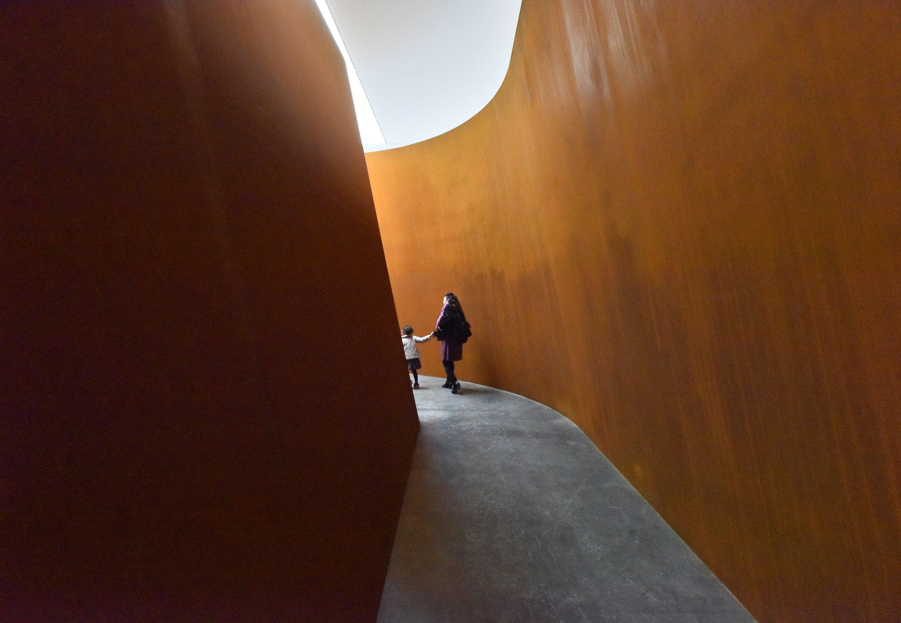

Unit 1 | Project 01

So as you might know by now, the topic you'll be addressing in this Unit's project is Space + Place. In order to complete part one of this Project, you will need to gather 6 images. Their obstructions are as follows:
- 2 images must utilize Space in an interesting or engaging way for you
- 2 images must utilize Place in an interesting or engaging way for you
- 2 images must utilize the concepts / skills of Space + Place in an interesting or engaging way
- complete a bulleted list with at least 4 bulleted items for each image briefly detailing why the image fits the assignment requirements
- Be prepared to discuss your selections.
- Please provide these materials in an organized cloud service folder link sent via email.
This portion of Project 1 is DUE by Sunday, September 6 at midnight.
Part 2
Listed below are your obstructions for Part 2 of Project 1
Please remember that no conceptual direction is given to allow you to focus on an formal, aesthetic, or conceptual concern of your own choosing. If this becomes a point of difficulty, please feel free to reach out via email, Slack, or Zoom.
- You must reference in some way the use of Place AND Space as it is found in two of your six chosen images in part 1
- You must create two different compositions
- The two compositions must be displayed together
- You must utilize both found and original assets
- Both compositions must be presented using p5js
This portion of Project 1 is DUE by Wednesday, September 16h at midnight. You will be turning in this project as a link to a p5js project that contains your final compositions.